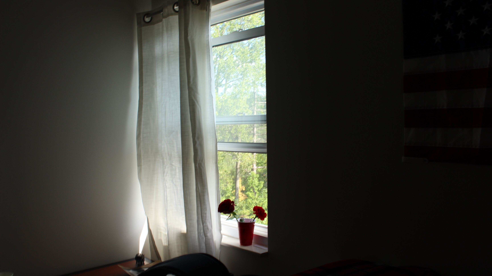
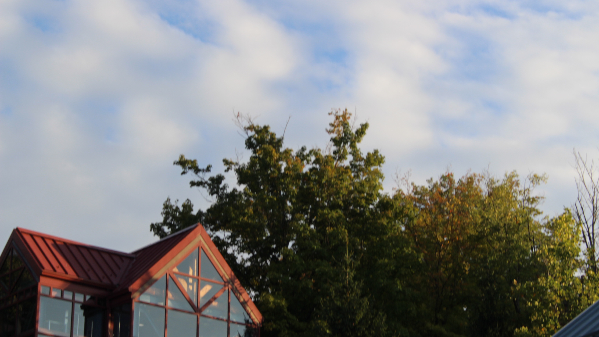

PHOTO 220: PROJECT 1
 This past month has been quite a journey for me, spiritually and mentally. In fact, this past week felt like the dawn of a new beginning. I have learned new aspects of my reality; how I perceive my relations, the desire for connection, and patience. With summer coming to an end, a season of my life is ending.
This past month has been quite a journey for me, spiritually and mentally. In fact, this past week felt like the dawn of a new beginning. I have learned new aspects of my reality; how I perceive my relations, the desire for connection, and patience. With summer coming to an end, a season of my life is ending.
 More often than not, people show up in my life, then disappear without any satisfying or pleasant conclusion. From these situations, I learn something, whether it’s about myself or others around me. I will forever be thankful to the souls who were a part of my life, despite how much hurt they made me go through. Unconditional support is such a powerful feeling. It is one of the realest emotions a human could feel I think, but rarely is it reciprocal.
 It is difficult not to indulge in the emotions that drag you down. In some way, the motions of depression and anxiety provide a sense of toxic security. The subliminal sense of “If nothing in life existed, everything would be better.” This is called "l’appel du vide", or “the call of the void.” It can appear in a variety of different ways; the impulse to drop life, the obsession over what could’ve been instead of accepting what is, to lose faith in the physical world, etc...
It is difficult not to indulge in the emotions that drag you down. In some way, the motions of depression and anxiety provide a sense of toxic security. The subliminal sense of “If nothing in life existed, everything would be better.” This is called "l’appel du vide", or “the call of the void.” It can appear in a variety of different ways; the impulse to drop life, the obsession over what could’ve been instead of accepting what is, to lose faith in the physical world, etc...
Often times these intrusive thoughts will lead to negative thought patterns that cause you to hurt yourself more than to heal. But then you realize the futility of the void. That in the end of it all, it is the final destination for all things physical. Then, once you realize the nature of physical reality, the love and appreciation for it becomes even greater. This appreciation gets to the point where not only is your physical reality heightened, but your subjective reality as well.
 Life is never perfect, but that is its objective reality. Life was never meant to be perfect, outside of our subjective experiences. Even through life’s struggles, there is this underlying beauty that, no matter what, everything will be okay.
In life's twists and turns, practicing mindfulness acts like a guide, helping us explore ourselves and grow. Being present in the moment becomes crucial, teaching us that things are always changing. Letting go of people who aren't positive for us is a way of showing ourselves love and freedom. Relationships can be like leaves falling off a tree – not all of them last forever. Saying goodbye to those who were once important is tough, but it's also a chance for new beginnings. Mindfulness reminds us that change is natural, and it gives us the strength to let go gracefully. To sum it up, blending mindfulness, letting go, and understanding that things don't last forever is like a journey of self-discovery. It helps us deal with life's ups and downs, finding beauty in every breath, every meeting, and every step we take on our ever-changing path.